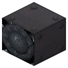
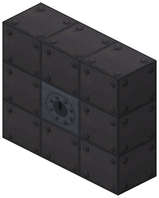
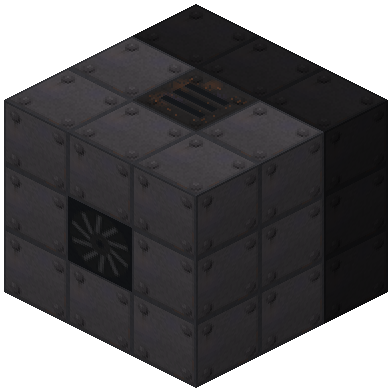
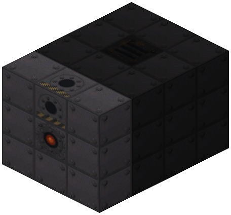
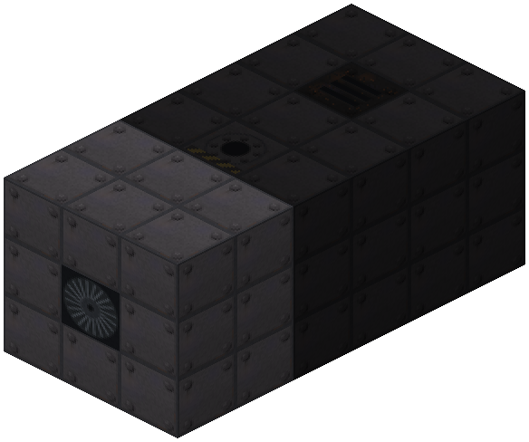
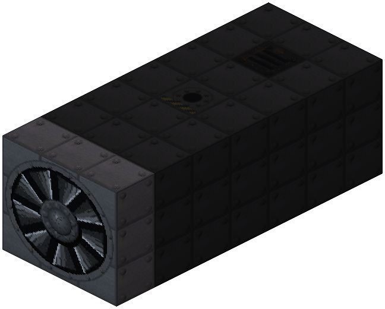
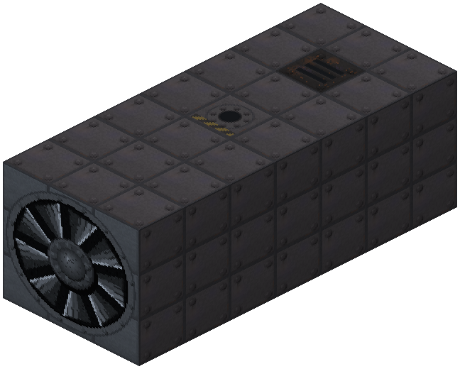

Gas Turbine Hub


3×3 multiblock in a heat-resistant casing: compressor 1–3 → combustion chamber → stages 1–3 → head; fuel hatch, open exhaust. Gases, biogas, kerosene; 60/114/163 hp, the compressor eats 60 %, starts in 5 s, idle burns 20 % fuel. No water.
The gas turbine is a 3×3 multiblock 5–9 blocks long. It burns gas or kerosene right inside: no boiler or water, starts in 5 s. The price — the compressor on the same axis eats 60 % of the stages' work, and at idle the turbine burns a fifth of rated fuel.
Assembly (the hub faces outward, everything else goes deeper behind it), the casing everywhere is heat-resistant (gas_turbine_casing, the steam turbine casing does not fit the frame):
- face layer: hub + 8 heat-resistant casings, the face shows a rotor like the steam turbine;
- along the axis: compressor stages 1–3 → one combustion chamber → turbine stages 1–3 (the same discs as the steam turbine) → head; no more turbine stages than compressor stages — otherwise the compressor cannot push it through;
- ring around — heat-resistant casing with at least one fuel hatch and exactly one open exhaust (hot smoke). A condenser or a steam hatch will not do.
Fuel (heat value is the same as in a Railcraft boiler firebox): coke oven gas, wood gas, petroleum (associated/refinery) gas, IC2 biogas, kerosene. 3+3 cupronickel steel stages at full load (163 hp) burn ~3 mB/t of coke oven gas or 0.13 mB/t of kerosene.
Shaft power: 1 turbine stage — 60 hp, 2 — 114, 3 — 163. The cap on hot gas differs from the steam turbine: cupronickel steel 180, monel 100, invar 60 hp — monel is worse here. Compressor stages cut consumption: 1 stage — like a boiler with a piston engine, 3 — like a steam turbine without a condenser (efficiency ~17 %, like Brown Boveri 1939). A steam turbine with a condenser on the same coal is still better.
Heads are shared with the steam turbine: shaft or EU generator (163 hp = 81.5 EU/t, needs MV). It takes load on the line like the steam turbine: electric drive → turbines → piston engines. Click with an empty hand — frame, compressor/stages, delivered/rated, what the compressor eats, fuel per hp. Comparator — speed. The Zavod sensor card shows fuel instead of steam.
Parameters
| Era | 4 — Oil and electricity at scale |
|---|---|
| Multiblock | yes: 3x3xL frame: casing, stages along the axis, head, hatches |
| Drive | drives the shaft |
| Tanks, mB | 16000 |
| What it does | multiblock: compressor 1–3 -> combustion chamber -> stages 1–3 -> head; no water, starts in 5 s |
| Input energy | gas (coke oven, wood, petroleum), biogas, kerosene |
| Output | shaft 60…163 hp or EU up to 81.5/t; smoke |
| Made of | see §2, docs/turbine.md |
| hp (Gas Turbine) | 60 / 114 / 163 at 1–3 stages (the compressor eats 60 %) |
Numbers
| steam turbine: first stage power | 40 hp |
|---|---|
| turbine: each next stage gives this % of the previous one | 90 % |
| turbine: steam per 1 hp with one stage (piston engine — 1000) | 900 0.001 mB/hp/t |
| turbine: steam per hp divided by 1 + this × (stages − 1) | 8 % |
| turbine: IC2 superheated steam work multiplier | 160 % |
| turbine: max stages (frame length = stages + 2) | 6 |
| turbine: idle burns this share of nominal steam | 5 % |
| turbine: spin-up from zero to full speed | 600 ticks |
| turbine: run-down to stop without steam | 600 ticks |
| turbine: condenser exhaust work multiplier | 125 % |
| turbine: condenser cooling water per 100 mB of steam | 5 mB/100 mB |
| turbine: condensate = steam / this (water -> steam in Railcraft is 1:160) | 160 |
| turbine: generator head, EU per 1 hp | 500 0.001 EU/hp |
| turbine: generator buffer in packets of its tier | 2 packets |
| gas turbine: first stage work before the compressor's share | 150 hp |
| gas turbine: each next stage gives this % of the previous one | 90 % |
| gas turbine: share of stage work that reaches the shaft, the compressor eats the rest | 40 % |
| gas turbine: cap with invar stages (hot gas) | 60 hp |
| gas turbine: cap with cupronickel steel stages | 180 hp |
| gas turbine: cap with monel stages | 100 hp |
| gas turbine: max compressor stages | 3 |
| gas turbine: max turbine stages (and no more than compressor stages) | 3 |
| gas turbine: fuel heat per 1000 hp per tick, 1 compressor stage | 55 heat ticks per 1000 hp·t |
| gas turbine: consumption divided by 1 + this × (compressor stages − 1) | 25 % |
| gas turbine: idle burns this share of nominal fuel (the compressor keeps spinning) | 20 % |
| gas turbine: spin-up from zero | 100 ticks |
| gas turbine: run-down to stop | 200 ticks |
| diesel: max cylinders | 6 |
Fed by
- Coke Oven Gas ← Coke Oven Chamber
Feeds
- no Zavod machine uses its product
Assembly
No water, no condenser. Face layer is casing only, hatches go behind it.

Back layer: the head (shaft or EU generator) in a ring of 8 heat-resistant casings; the shaft goes back along the axis.

Turbine stages (1–3, no more than compressor stages; 2 here) — same discs as the steam turbine. Exactly one open exhaust in the ring (smoke).

Combustion chamber — exactly one. A fuel hatch in the ring behind the face (gases, biogas, kerosene).

Compressor stages (1–3, 2 here): more stages — better efficiency.

Face: the controller facing out in a ring of heat-resistant casing. Axis from the face: compressor → chamber → stages → head.

Faded blocks were placed in earlier steps.